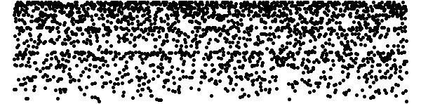
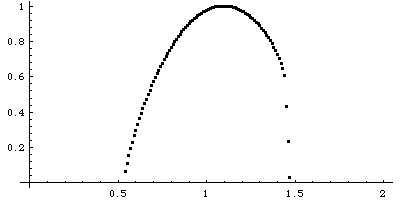

| Given a time series x1, x2, ..., xN, |
|  |
| Denote by m the minimum value of all the xi, and by M the
maximum value of all the xi. |
| For q = -20 to 20 in steps of 0.25, |
(1) Select a bin size r and partition [m,M] into intervals
of size r: |
| [m, m+r), [m+r, m+2r), ...,
[m+kr, M], where m+kr < M <= m+(k+1)r. |
Call these bins B0, ..., Bk. |
(2) For each j, 0 <= j <= k, count the number of xi that
lie in bin Bj. Call this number nj. Ignore all nj that equal 0
after all the xi have been counted.. |
(3) Now compute the qth moment, Mrq =
(n0/N)q + ... + (nk/N)q, where the sum is over
all nonzero ni. |
| Repeat (1) - (3) for a range of r values getting closer to 0. |
| We hypothesize the power law relation, Mrq scales as (1/r)τ(q). |
| So for all r values, find the slope of the best-fitting line through the points
(Log(1/r), Log(Mrq)). The goodness of fit measures the
success of the power law hypothesis. |
| Call the slope of the best-fitting line τ(q). |
| |
| We have computed τ(-20), τ(-19.75), ..., τ(20). |
| Start with α = 0.1. Compute min{τ(q) + α⋅q}, where the
minimum is taken over all q values, q = -20, -19.9, ..., 20. (Why do we want to do this?)
Call this minimum f(α). |
| Ignore negative values of f(α). Increase α in steps of 0.1 and plot the points
(α), f(α)) for positive f(α). Continue until f(α) becomes negative. |
| |
|  |
| Here is the f(α) curve for the time series above. |